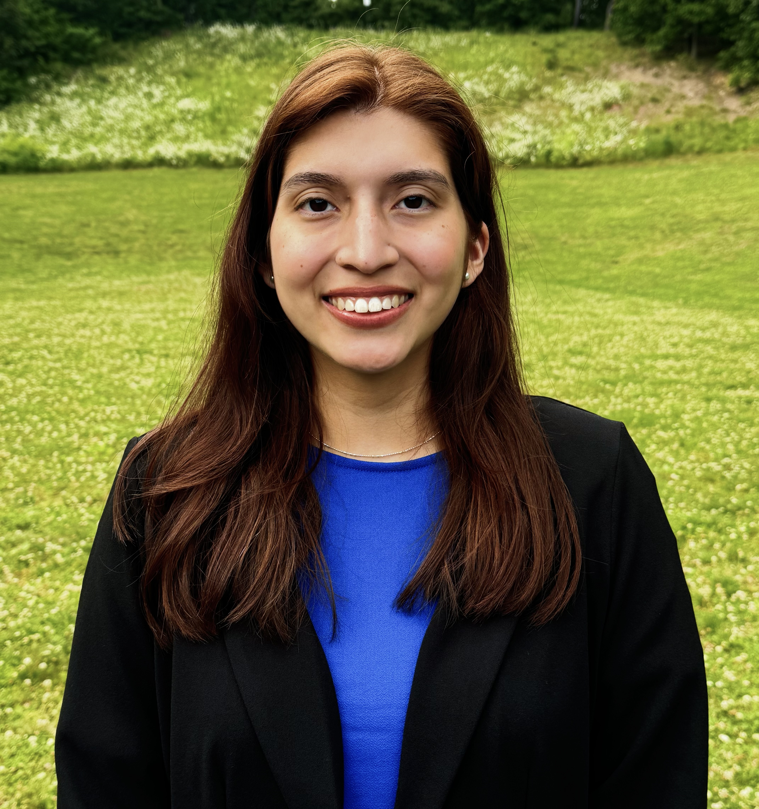
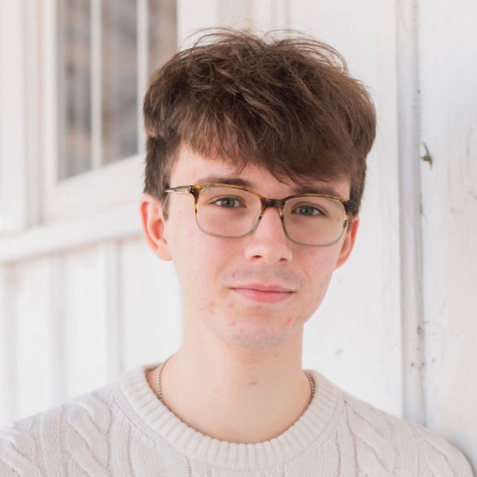
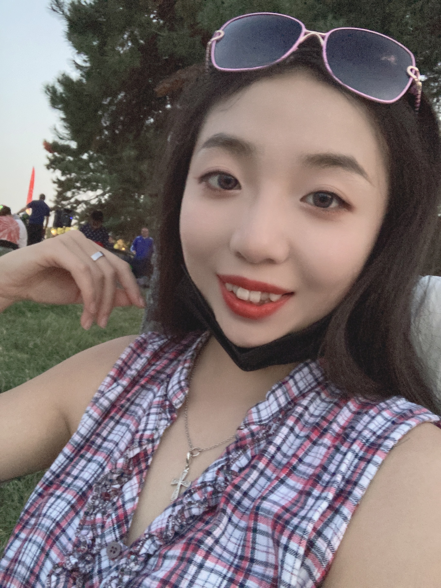

Meet the 2024 FCAD GRAD Mentors!

Mark Giovinazzi, PhD (he/him/his)
Postdoctoral Fellow, Amherst College
Research: I am an Astronomy postdoc studying planets, brown dwarfs, and stars in our Sun's neighborhood with the ultimate goal of learning how these different objects form.Mentorship: I am a neurodivergent, first-generation college student with the goal of making academia more accessible to students of all backgrounds. I created the GRAD program as a graduate student at the University of Pennsylvania, where I was a National Science Foundation Graduate Research Fellow, and have mentored more than a dozen undegraduates through their graduate application processes.
Website: markgiovinazzi.github.io

Phoebe Heretz (she/her/hers)
First-year Graduate Student, UMass Amherst Astronomy
Research: I am an extragalactic researcher primarily using spectroscopy to understand how galaxies evolve over cosmic time. I am working with Daniela Calzetti and Alex Pope at UMass, and am affiliated with Lisa Kewley's group at the Harvard & Smithsonian Center for Astrophysics. I have additional research experience working with a protoplanetary disk group called JDISCS, where we use JWST to observe the chemistry in these forming solar systems to better understand how they evolve.Mentorship: I am a non-traditional, returning student who hails from a small astronomy department, and am eager to share my perspectives to help other students navigate this complex application process. I was awarded an National Science Foundation Graduate Research Fellowship (GRFP) during my senior year, and can assist fellow students with applying for this fellowship. I come from a background in sales & marketing and can use this unique perspective to help you sell yourself!
Website: linkedin.com/in/phoebe-heretz

Victoria Salazar (she/her/hers)
Graduate Student, UMass Amherst
Research: My research focus is studying extragalactic evolution, using CEERS JWST archival data, and the upcoming CAPERS JWST survey to understand the evolution of dust properties and stellar activity of dust obscured galaxies over time.Mentorship: I am a dedicated astronomer who was fortunate enough to have the right support to help me navigate my true career ambitions in astronomy. I look forward to providing that same support to other students who are also looking to follow their true passions in astronomy.
Website: linkedin.com/in/victoria-salazar-13312120a

Aidan Cloonan (he/they)
Second-year Graduate Student, UMass Amherst
Research: I study supermassive black holes, their environments, and how they formed and then grew. Currently I work with Kate Whitaker and Sinclaire Manning at UMass, using surveys from the James Webb Space Telescope to observe the first populations of massive black holes in the first gigayear after the Big Bang. I am also affiliated with Mike Gladders’ research group at UChicago, where I went for undergrad.Mentorship: I am autistic and nonbinary, and I have had wonderful mentors during my time in academia who have given me both the space and the guidance to pursue my own interests, in my own personal way. I am passionate about providing that same environment as a mentor and about maintaining a healthy and just, inclusive workspace for students.
Website: apcloonan.github.io

Yanzhe (Jenny) Zhang (she/her/hers)
Graduate Student, UMass Amherst
Research: I am broadly interested in galaxy formation and evolution over cosmic time. Currently, I am working together with Dr. Houjun Mo on developing a new, flexible, and robust star formation history model using principal component analysis.Mentorship: Coming from a different cultural background, I am specifically passionate about helping international students pursue further in academia. Despite that my major focus during undergrad was particle physics, I have met great advisors and peers in both physics and astronomy fields who helped me move forward, which is also the reason I’d like to be a similar peer mentor to the current undergrads.